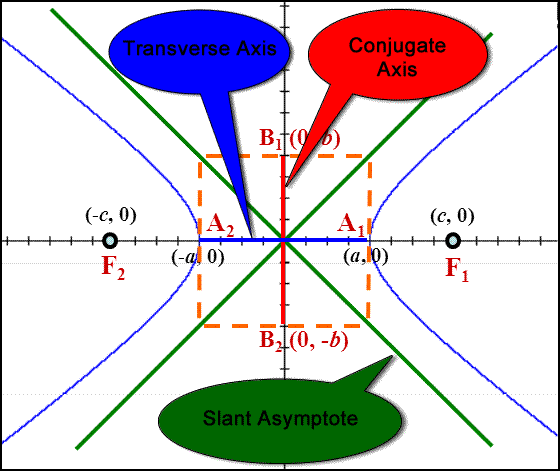

The Hyperbola
Video

Standard Form of the Equation of a Hyperbola
transverse axis parallel to x-axis:${(x-h)^2}/{a^2}-{(y-k)^2}/{b^2}=1$
transverse axis parallel to y-axis:${(y-k)^2}/{a^2}-{(x-h)^2}/{b^2}=1$
center=$(h,k)$
a = length from center to a verex
c = length from center to a focus
Pythagorean Theorem: $c^2=a^2+b^2$
Equations of the Asymptotes of a Hyperbolatransverse axis parallel to y-axis:${(y-k)^2}/{a^2}-{(x-h)^2}/{b^2}=1$
center=$(h,k)$
a = length from center to a verex
c = length from center to a focus
Pythagorean Theorem: $c^2=a^2+b^2$
horizontal transverse axis: $y-k=±b/a(x-h)$
vertical transverse axis: $y-k=±a/b(x-h)$
vertical transverse axis: $y-k=±a/b(x-h)$
Standard Form of the Equation of a Hyperbola
Find the coordinates of the center, foci & vertices, & equations of the aysmptotes for:
Asymptotes
$\table 4x^2-9y^2+32x+18y+91=0; 4x^2+32x-9y^2+18y=-91; 4(x^2+8x+__)-9(y^2-2y+__)=-91; 4(x^2+8x+16)-9(y^2-2y++1)=-91+64-9; 4(x+4)^2-9(y-1)^2=-36$
$\table {(x-h)^2}/{a^2}-{(y-k)^2}/{b^2}=1; {(x+4)^2}/{-9}+{(y-1)^2}/4=1$ $\table {(y-k)^2}/{a^2}-{(x-h)^2}/{b^2}=1; {(y-1)^2}/4-{(x+4)^2}/9=1$
Find the coordinates of the center, foci & vertices, & equations of the aysmptotes for:
Asymptotes
$\table 4x^2-9y^2+32x+18y+91=0; 4x^2+32x-9y^2+18y=-91; 4(x^2+8x+__)-9(y^2-2y+__)=-91; 4(x^2+8x+16)-9(y^2-2y++1)=-91+64-9; 4(x+4)^2-9(y-1)^2=-36$
$\table {(x-h)^2}/{a^2}-{(y-k)^2}/{b^2}=1; {(x+4)^2}/{-9}+{(y-1)^2}/4=1$ $\table {(y-k)^2}/{a^2}-{(x-h)^2}/{b^2}=1; {(y-1)^2}/4-{(x+4)^2}/9=1$
$\table a=2\text", " b=3; c^2=a^2+b^2; c=±√{4+9}; c=±√{13}$
$a=2\text", " b=3\text", " c=±√{13}\text", " h=-4\text", " k=1$
$a=2\text", " b=3\text", " c=±√{13}\text", " h=-4\text", " k=1$
Center
$(h,k)=(-4,1)$
Vertices
$\table =(h,k+a)=(-4,1+2)=(-4,3); =(h,k-a)=(-4,1-2)=(-4,-1)$
Foci
$(h,k±c)=(-4,1±√{13})$
Vertical Transverse Axis
$\table y-k=±a/b(x-h); y-1=±2/3(x+4)$
$\table y-k=±a/b(x-h); y-1=±2/3(x+4)$